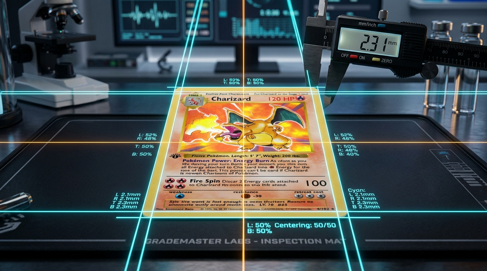
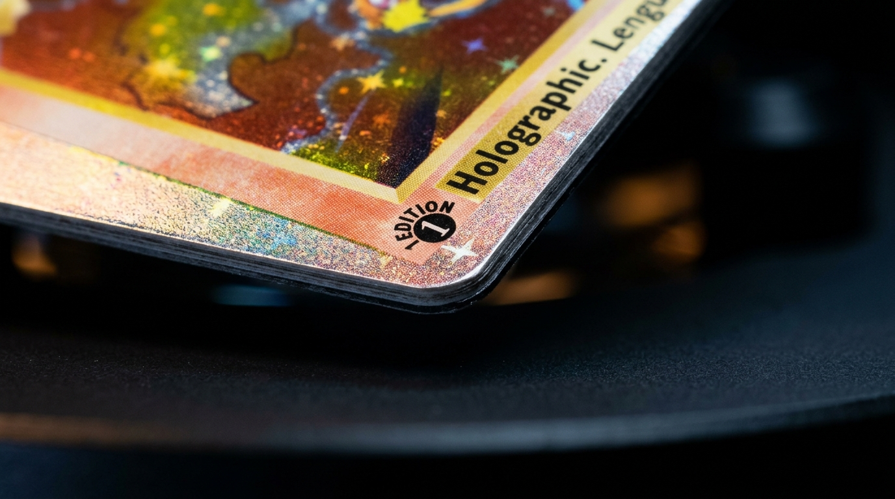
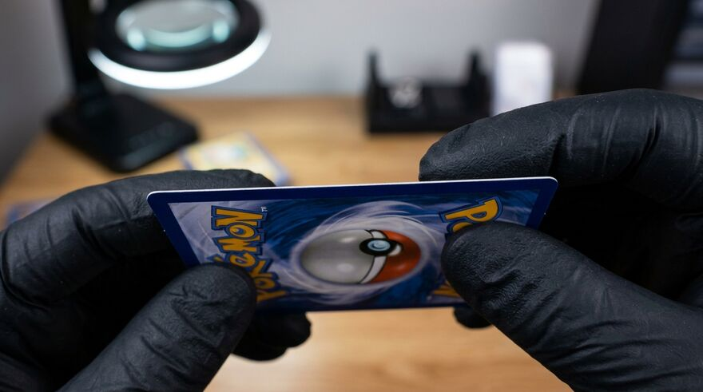
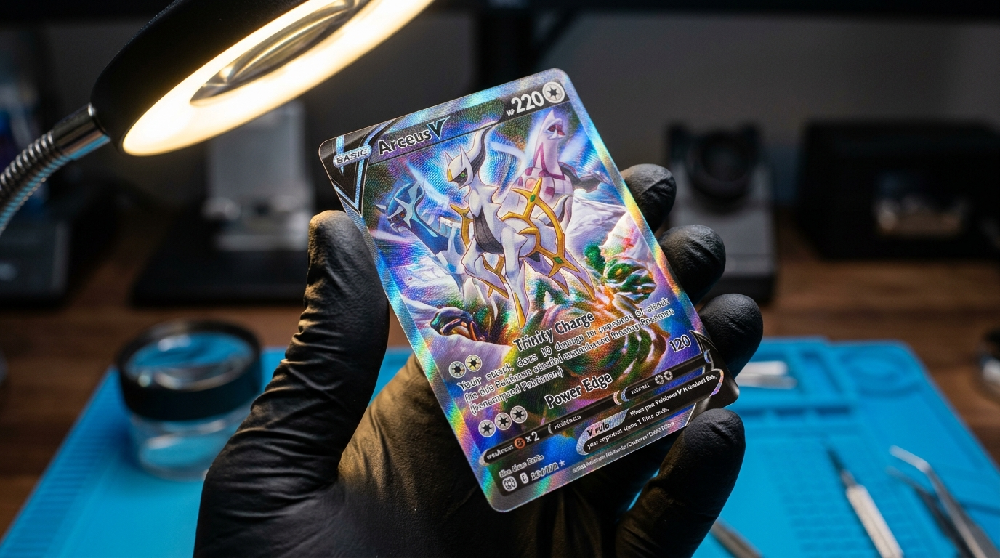

Störst prisökning senaste veckan jämfört med månaden, bland korten i de senaste seten.
Dyraste i nya set
Sjunker
Sökresultat
Så värderas ett kort
Priserna ovan gäller ograderade kort i nyskick. Ditt eget kort kan vara värt mer eller mindre. Så här tänker samlare och graderingsfirmor.
1
Rätt kort först
Namn, set och nummer avgör vilket pris som gäller. Samma Pokémon finns i många set, och samma bild kan finnas som vanlig, reverse holo och specialversion. Numret står i ett av de nedre hörnen.
Är numret högre än setets storlek, till exempel 245/217, är det ett hemligt kort (secret rare). De är nästan alltid värda mer.
2
Sällsynthet
Symbolen nere på kortet visar hur vanligt det är. Cirkel betyder vanligt, romb ovanligt och stjärna sällsynt. Kort med två eller fler stjärnor, guldstjärnor, illustrationskort och hela bildytor är de som brukar driva ett sets värde.
På gamla kort från 1999–2000 höjer en 1st Edition-stämpel eller ett så kallat shadowless-tryck värdet kraftigt.
3
Skicket
Efter vilket kort det är betyder skicket mest. Titta på hörnen, kanterna, ytan och baksidan i bra ljus.
Near MintInga synliga fel. Ger fullt pris.
ExcellentLite slitage som syns på nära håll.
Lätt spelatVita prickar på kanter, lätta repor.
SpelatTydligt slitage, små veck.
DåligtVeck, fukt eller skador. Ofta en liten del av priset.
4
Sålda priser, inte annonser
Ett kort är värt vad någon faktiskt betalat, inte vad det annonseras för. Jämför avslutade försäljningar i samma skick. Utropspriser ligger ofta högre än vad korten säljs för.
Cardmarkets trendpris här på sidan bygger på genomförda köp i Europa.
Gradering: betyg från 1 till 10
Ett graderingsföretag (de största är PSA, CGC och Beckett) granskar kortet, ger det ett betyg och förseglar det i ett plastfodral. Ett högt betyg kan göra kortet värt flera gånger mer än samma kort ograderat, eftersom köparen vet exakt vad den får.
Betyget bygger på fyra saker:

CentreringHur jämna ramarna är runt bilden, på fram- och baksidan. Ett tiopoängskort kräver nästintill perfekt symmetri (ofta max 55/45 eller 60/40 fram).

HörnSkarpa och hela hörn utan minsta vithet ("whitening"), avrundning eller flisning. Granskas noga under stark belysning och förstoring.

KanterRaka och rena snitt utan hack, flagor eller vita prickar. Baksidans mörka ram avslöjar direkt om kanten har minsta tecken på slitage.

YtaKortet måste vara fritt från repor, trycklinjer och intryck. Holografiska ytor vinklas i släpljus för att syna glansen och mikroskopiska märken.
10Gem MintFelfritt
9MintEtt litet fel
8Near Mint–MintSmå fel
7–5Near Mint–ExcellentSynligt slitage
4–1Spelat–DåligtTydliga skador
Namnen på betygen skiljer sig lite mellan företagen. Beckett ger även delbetyg (subgrades) för var och en av de fyra delarna.
De tre stora graderarna
PSA
Professional Sports Authenticator
Branschstandard med störst samlarmarknad och högst likviditet vid vidareförsäljning.
BGS
Beckett Grading Services
Kända för delbetyg på etiketten. En felfri 10:a i alla fyra kategorier kallas Black Label.
CGC
CGC Cards
Populära för modern högteknologisk bildanalys och kristallklara, UV-skyddade plastfodral.
Varför kapsla in kortet (Slab)?
Äkthetsgaranti: Registreras i online-databas med unikt certifikatnummer mot förfalskningar.
Permanent skydd: Ultraljudssvetsad hårdplast mot fukt, smuts, böjning och solblekning.
Enklare handel: Både köpare och säljare vet kortets exakta skick utan diskussion.
Lönar det sig att gradera?
Gradering kostar från några hundra kronor per kort, plus frakt och försäkring, och kan ta flera månader. För billiga kort lönar det sig sällan.
Gradera kort som är värda mycket ograderade och ser felfria ut. Skillnaden mellan betyg 9 och 10 kan vara stor i pris.
Kolla centreringen själv först. Det är den vanligaste anledningen till att ett i övrigt fint kort inte får toppbetyg.
Lägg kortet i en mjuk plastficka och ett hårt fodral direkt när du dragit det, så att det håller sig i nyskick.